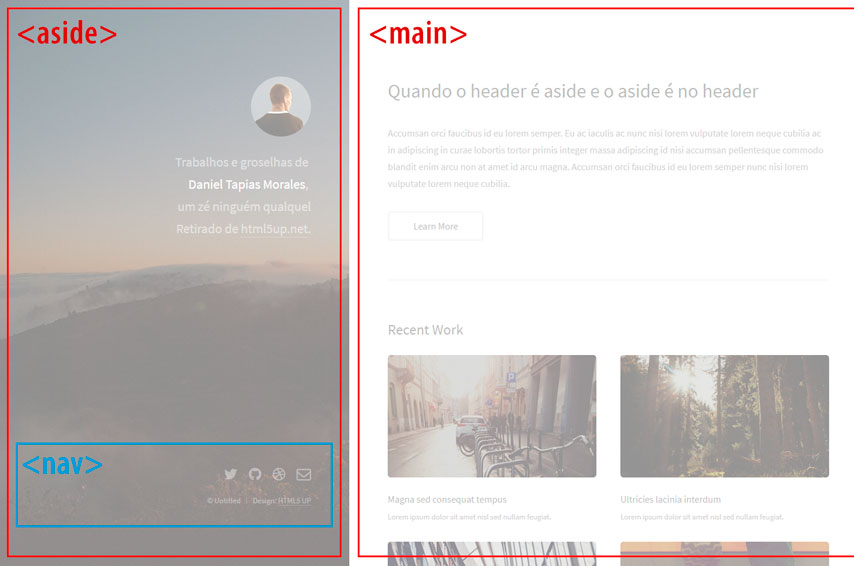
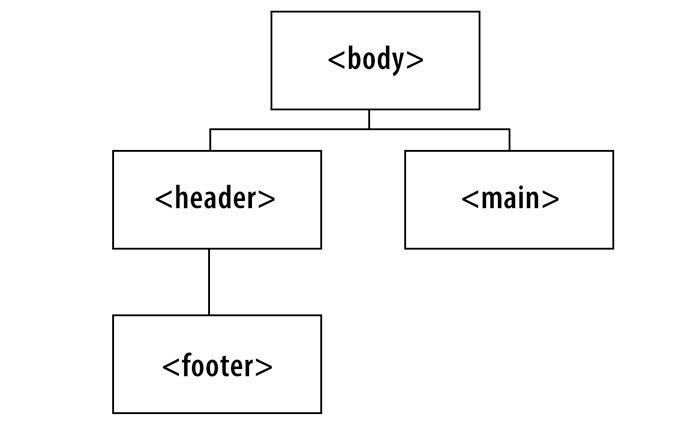
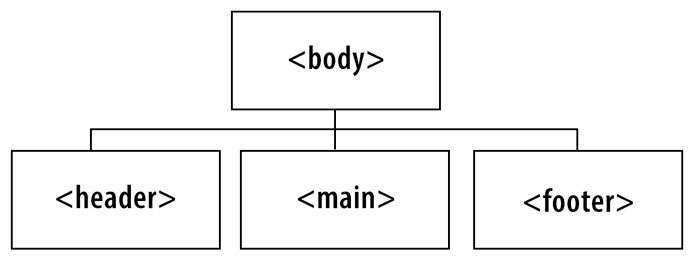

Não! Eu não estou falando de culturas onde a leitura é diferente da nossa e também não estou falando do design visto de lado.
A motivação para escrever este artigo foi no meio do planejamento do meu curso de Web Fundamentos: HTML e CSS, onde eu elaborei um pequeno projeto onde o resultado final é mostrado na imagem abaixo:
A inspiração cópia para este exercício foi este template
É muito comum estruturarmos os nossos layouts utilizando as tags semânticas do HTML, então, à primeira vista, talvez você tenha pensado que as tags mais corretas para chegarmos nesse resultado seriam:

Isso porque tendemos a pensar em <header> como sendo no topo, <aside> como sendo ao lado, <footer> no rodapé e <nav> sendo a navegação. Ou seja, somos levados a pensar em tags semânticas como pensamos em organização visual. E é aí que mora o problema, pois precisamos esquecer a parte visual e voltarmos para as origens das tags do HTML e qual o real significado de cada tag. Afinal, quem cuida do visual é o CSS, e não o HTML.
Parafraseando o site da mozzila, resolvi transcrever pequenos trechos de código de lá. Aliás, já que estamos falando em semântica, inspecione o código fonte dessa página para ver qual tag utilizei para citar um trecho de outro site ;)
O elemento HTML <header> representa um grupo de suporte introdutório ou navegacional. Pode conter alguns elementos de cabeçalho mas também outros elementos como um logo, seções de cabeçalho, formulário de pesquisa, e outros.
O elemento HTML <aside> representa uma seção de uma página que consiste de conteúdo que é tangencialmente relacionado ao conteúdo do seu entorno, que poderia ser considerado separado do conteúdo. Essas seções são, muitas vezes, representadas como barras laterais. Elas muitas vezes contem explicações laterais, como a definição de um glossário; conteúdo vagamente relacionado, como avisos; a biografia do autor; ou, em aplicações web, informações de perfil ou links de blogs relacionados.
O elemento HTML de Rodapé (<footer>) representa um rodapé para o seu sectioning content (conteúdo de seção) mais próximo ou sectioning root elemento (ou seja, seu parente mais próximo <article>, <aside>, <nav>, <section>, <blockquote>, <body>, <details>, <fieldset>, <figure>, <td>). Normalmente um rodapé contém informações sobre o autor da seção de dados, direitos autorais ou links para documentos relacionados.
O Elemento HTML de Navegação (<nav>) representa uma seção de uma página que aponta para outras páginas ou para outras áreas da página, ou seja, uma seção com links de navegação. Nem todos os links de um documento devem estar dentro de um elemento <nav>, o qual é destinado apenas para grupos importantes de links de navegação; tipicamente o elemento <footer> contém uma lista de links que não precisam estar em um elemento <nav>.
Com as definições bem fundamentadas em nossa mente e sem nos preocuparmos com o aspecto visual, veja se faz mais sentido a estrutura semântica representada na imagem a seguir:
Se avaliarmos as tags mostradas na imagem acima e compararmos com os objetos semânticos de cada uma dessas tags, vemos que esta última faz muito mais sentido. Uma outra forma de representarmos essa estrutura seria através da figura a seguir:
.
Ao transformarmos essa representação do DOM em código, teremos
1 |
<body> |
Opa! Sinal vermelho! Colocar um footer dentro de um header? Isso não me parece uma boa escolha, visto que há um conflito semântico aí. Mas como agradar o designer que pensou nesse layout com tanto carinho? Bom, design é outra história. Portanto, vamos focar no HTML. Sendo assim, o mais correto seria:

Agora transcrevendo em código com a estrutura corrigida:
1 |
<body> |
Mas e a questão do posicionamento do footer dentro da coluna à esquerda? Bom, isso é uma questão visual e, como dito anteriormente, quem cuida do visual é o CSS. O que não devemos permitir é que uma decisão de design afete a estrutura semântica de nossa página na web.
Conclusão
Procure utilizar as tags corretas para estruturar seus layouts sem se preocupar com posições, tamanhos, margins etc. Tenha em mente o real objetivo de cada tag e escreva seus códigos muito mais semânticos e, por que não, acessíveis.